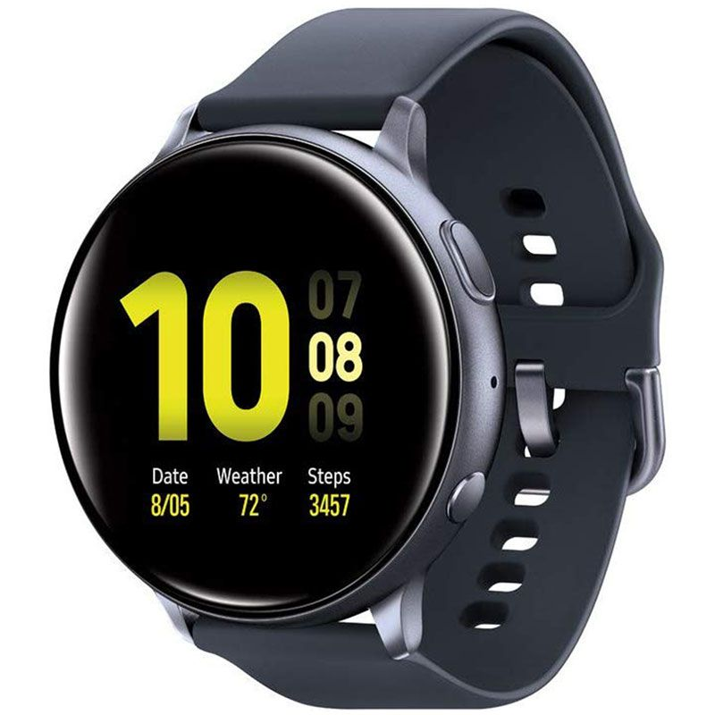

Smartwatches
A smartwatch is a wearable computer in the form of a watch, providing the user with a local touchscreen interface for everyday use. Believe it or not, but people might not actually grasp the significance of this innovation as it is going to take a huge part in our lives in the future, taking into account all the time it saves.

 Categories
Categories